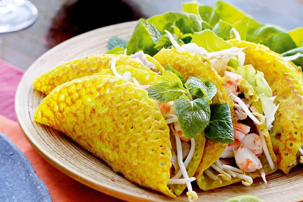

Authentic Vietnamese Spring Rolls (Nem Ran Hay Cha Gio)

Description
It’s got that irresistible crispy, yet delicate, golden brown crust. And the inside of the bánh xèo is filled with delicious flavors: pork and shrimp, and sprinklings of mung bean, onions and bean sprouts.
This crowd pleaser is a hot-off-the-pan, hands-on food meant to be wrapped in veggies and dipped in a flavorful sauce. Vietnamese bánh xèo, often called Vietnamese pancakes, or Vietnamese crêpes, are great for family style dinners and you can prep the batter a night ahead of time. Lets get to sizzling!
Bánh xèo seems to be designed to be eaten as a family. The batter, filling ingredients, and veggies aren’t complicated to prepare, but they don’t make sense to be bought or made to be eaten by yourself.
You don’t just buy 1/4 pound of pork, 8 shrimps, or buy 1/4 head of lettuce. You kind of have to bump the volume to make each step worth the prep and to me, meals that are shared are a lot more fun anyway.
These crêpes take a little bit of prep time and organization, then you can just keep knocking these guys out faster than people can eat them.
Ingredients
- 2 ounces dried thin rice noodles
- ¾ cup ground chicken
- ¼ cup shrimp - washed, peeled, and cut into small pieces
- 2 large eggs, beaten
- 1 carrot, grated
- 4 wood fungus mushrooms, chopped
- 2 green onions, chopped
- ½ teaspoon white sugar
- ½ teaspoon salt
- ½ teaspoon ground black pepper
- 24 rice paper wrappers
- 2 cups vegetable oil for frying
Steps
- Soak rice noodles in cold water until soft, about 20 minutes. Drain well; cut into 2-inch long pieces.
- Combine the noodle pieces, chicken, shrimp, eggs, carrot, wood fungus mushrooms, and green onions in a large bowl. Sprinkle in sugar, salt, and black pepper; stir filling mixture well.
- Soak 1 rice paper wrapper in a shallow bowl of warm water to soften, about 15 seconds. Remove from water and place on a damp cloth laid out on a flat surface.
- Place 1 tablespoon of filling mixture into the center of the softened rice paper. Fold the bottom edge into the center, covering the filling. Fold in opposing edges and roll up tightly. Repeat with remaining rice paper wrappers, soaking and filling each one individually.
- Heat oil in a work or large skillet over medium heat.
- Fry the spring rolls in batches of 3 or 4 until crisp and golden brown on both sides, about 5 minutes. Drain on paper towels.
Some Notes
- Ground pork can be used instead of chicken if desired.
- Shiitake mushrooms can be substituted for the wood fungus mushrooms if desired.
- We have determined the nutritional value of oil for frying based on a retention value of 10% after cooking. Amount will vary depending on cooking time and temperature, ingredient density, and specific type of oil used.
Nutrition Facts
Serving: 132 calories; protein 6.5g; carbohydrates 14.4g; fat 5.2g; cholesterol 44.8mg; sodium 225mg.